CMSC424: Transactions — Lock-Based Concurrency Control
Instructor: Amol Deshpande
1. The Concurrency Problem
When multiple transactions execute simultaneously against the same database, their operations can interleave in ways that produce incorrect results — even when each individual transaction is correct. The course-enrollment example from the previous notes illustrates this concisely: two students simultaneously checking and updating the same enrollment count can both pass the capacity check when only one should, leading to a section that is over capacity.
The obvious solution — run one transaction at a time — produces a serial schedule that is always correct. But serial execution is completely impractical at scale. Consider a ticketing system like Ticketmaster during a high-demand concert sale: hundreds of thousands of users are simultaneously selecting seats. Each user takes minutes to choose and pay. A strict queue would be absurdly long. The system must allow concurrent execution.
The question is therefore how to allow interleaving while preventing incorrect outcomes. The classical answer, developed in the database literature starting in the mid-1970s, is locking.
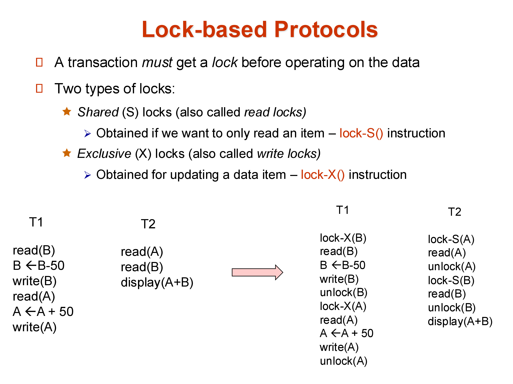
3. Why Locking Alone Is Not Enough
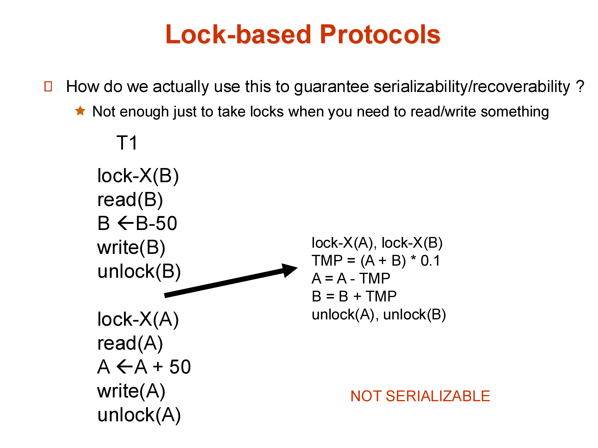
Requiring transactions to acquire locks before accessing data is necessary but not sufficient for correctness. Consider a transaction T1 that transfers money from account B to account A: it locks B, reads B, subtracts 50, writes B, unlocks B, then locks A, reads A, adds 50, writes A, unlocks A. Between the unlock of B and the lock of A, T1 holds no locks at all.
If another transaction T2 arrives in this gap and acquires locks on both A and B, performs its own updates, and commits — the schedule is no longer serializable. T2 “snuck in” between T1’s two critical operations and observed an inconsistent intermediate state.
The fix is to constrain when unlocks may occur, not just whether locks are held.
4. Two-Phase Locking (2PL)
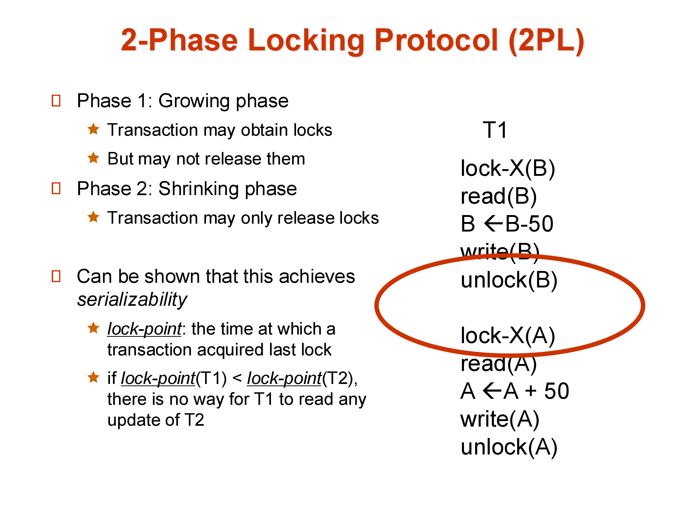
Two-phase locking (2PL) imposes one rule: a transaction may never acquire a lock after it has released any lock. This partitions a transaction’s execution into exactly two phases:
- Growing phase: the transaction acquires locks — shared or exclusive — as needed. It may not release any lock during this phase.
- Shrinking phase: the transaction releases locks one by one. It may not acquire any new lock during this phase.
The rule prevents the “gap” problem above: once a transaction releases any lock, it enters the shrinking phase and can never lock anything new. The intermediate state a transaction exposes between an unlock and a subsequent lock is therefore never possible.
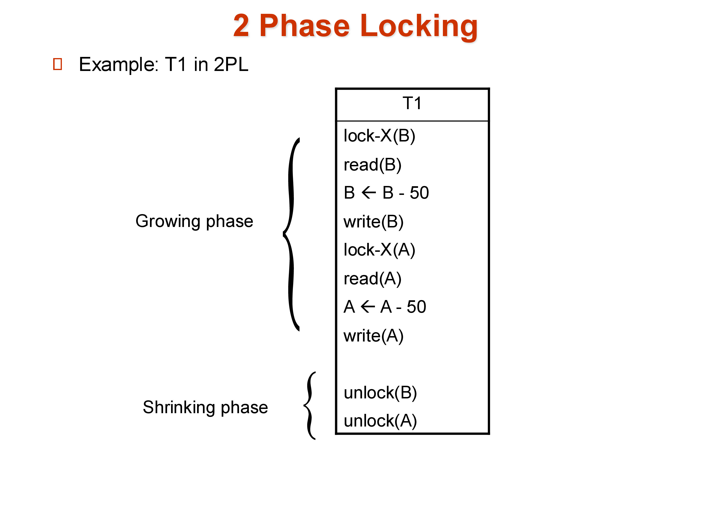
The lock point of a transaction is the moment it acquires its last lock — the boundary between its growing and shrinking phases. A key theorem: if transaction \(T_i\)’s lock point precedes transaction \(T_j\)’s lock point, then in any serializable execution \(T_i\) is serialized before \(T_j\). Stated differently, the equivalent serial schedule for any 2PL-compliant concurrent execution is simply the transactions in lock-point order.
In practice, most transactions acquire all their locks during execution and then release them in one batch at the end — the lock point is thus near the commit point. This is the common implementation pattern.
2PL guarantees serializability. This was one of the central results of the 1976 paper that established the locking framework and has not changed since.
5. Recoverability and Strict 2PL
2PL guarantees serializability but does not guarantee recoverability. A schedule is recoverable if no transaction commits until all transactions whose writes it read have also committed.
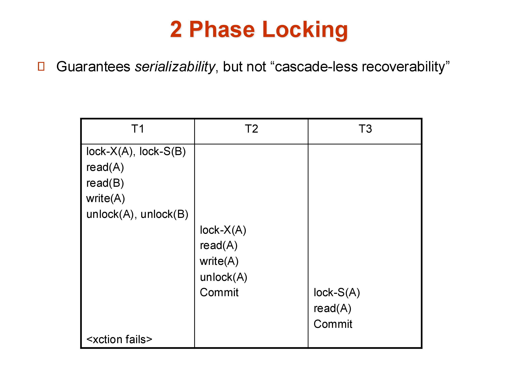
Consider: T1 locks A, updates it, and unlocks A (still compliant with 2PL — this is the shrinking phase). T2 then locks A, reads T1’s updated value, and commits. Now T1 encounters an error and must abort. T1’s changes to A must be rolled back — but T2 has already read that value and committed. T2’s committed state is based on data that never officially existed. This is called a dirty read, and the cascade of aborts it can trigger — T3 read T2’s value, so T3 must also abort, and so on — is called cascading rollback.
Once a transaction commits, its effects are permanent (durability). There is no way to “un-commit” T2 just because T1 aborted. The schedule is unrecoverable.
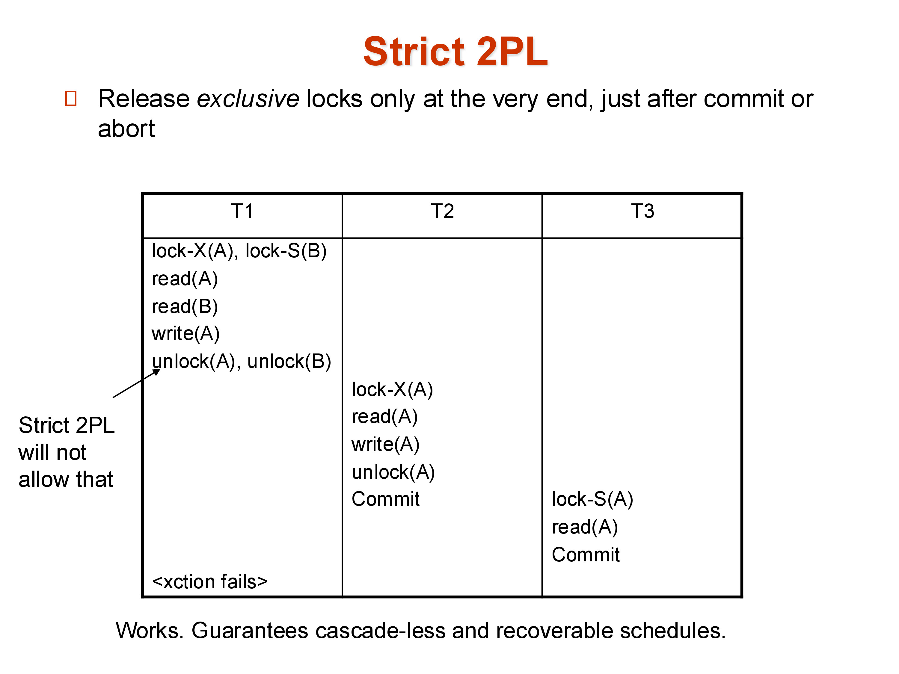
The solution is strict two-phase locking (Strict 2PL): a transaction must hold all its exclusive locks until it commits or aborts. Shared locks may be released earlier, but X-locks — the ones that represent writes — are held until the transaction’s final decision.
Under Strict 2PL, T1 holds the X-lock on A until it commits or aborts. T2 cannot read T1’s updated value of A until T1 has finished. If T1 aborts, T2 never sees the dirty value. If T1 commits, T2’s read is of a committed value and no cascade occurs.
The cost is that T1 holds its locks longer, which reduces concurrency. Other transactions wanting to access A must wait for T1’s entire execution to complete. But the correctness guarantees are worth it: Strict 2PL produces both serializable and recoverable schedules.
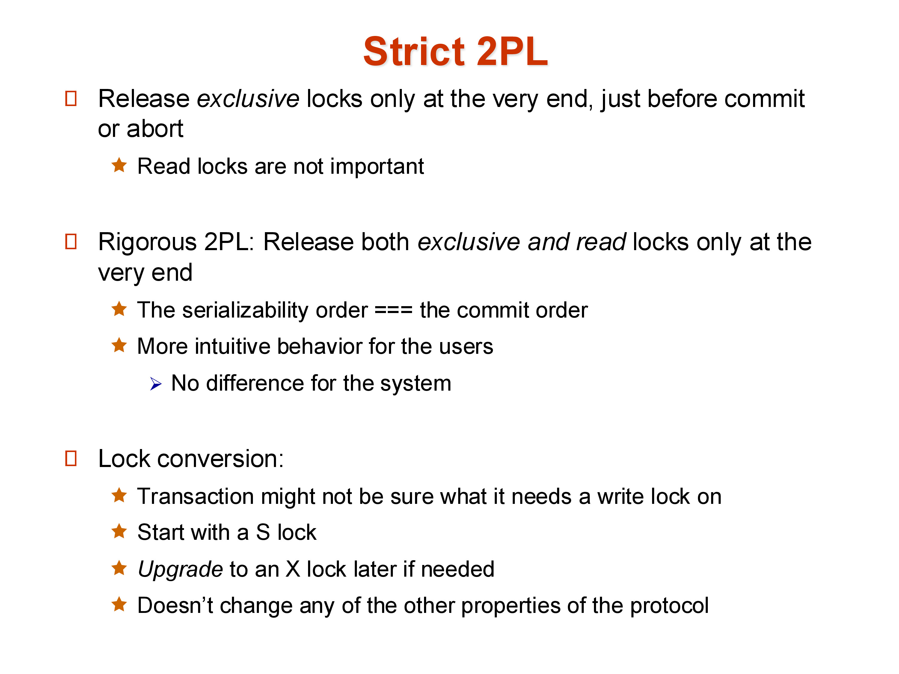
A further tightening, rigorous 2PL, holds both shared and exclusive locks until commit. The practical difference is minor; Strict 2PL is the standard choice.
Lock conversion is permitted: a transaction may upgrade a shared lock to an exclusive lock (when it decides to write something it originally only read). Downgrading — converting X to S — is not permitted, because releasing exclusive access is equivalent to entering the shrinking phase, and 2PL then prohibits further lock acquisitions.
6. Implementation: The Lock Table
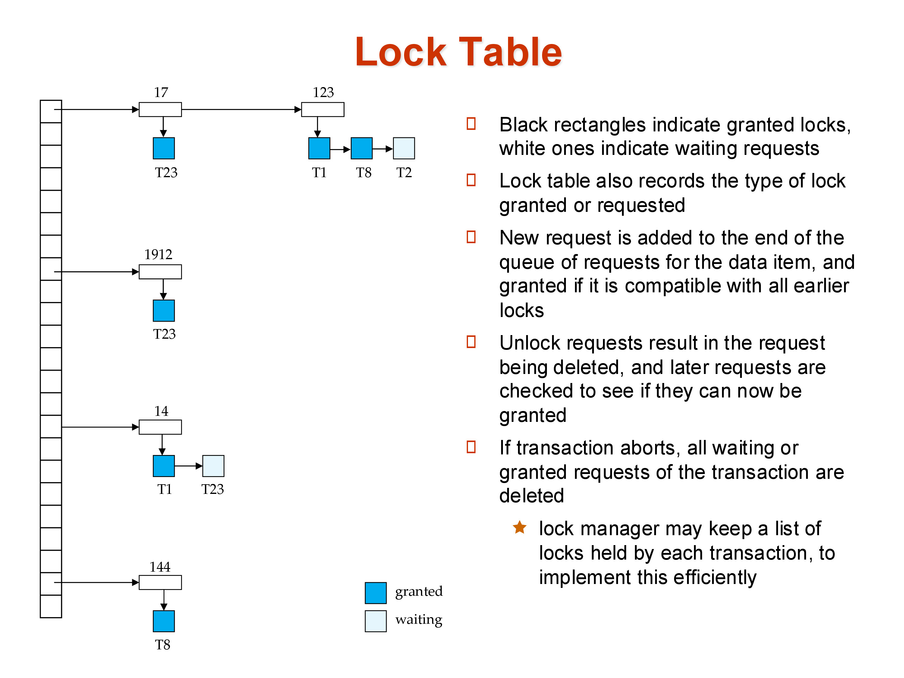
The lock manager’s data structure is a hash table mapping data item identifiers to lock records. Each record contains: - The list of transactions currently holding locks on the item, with their lock modes - The queue of transactions waiting for a lock, in order of arrival
Granted locks are shown in one region; waiting requests in another. When a transaction releases a lock, its entry is removed from the granted list and the lock manager checks the queue: if the next waiter’s requested mode is compatible with any remaining granted locks, the lock is granted; otherwise, it continues waiting.
Every transaction sends every lock request and every unlock to the lock manager. In a busy production database with thousands of transactions per second, the lock table is one of the hottest data structures in the system and is implemented with specialized low-level techniques (fine-grained internal locking, cache-aligned structures) rather than a general-purpose hash table.
7. Deadlocks
Even with 2PL in place, the system can reach a state where two or more transactions are each waiting for a lock held by another — a deadlock. Neither transaction can proceed, and neither will release its locks, because it cannot make progress without acquiring the lock it is waiting for.
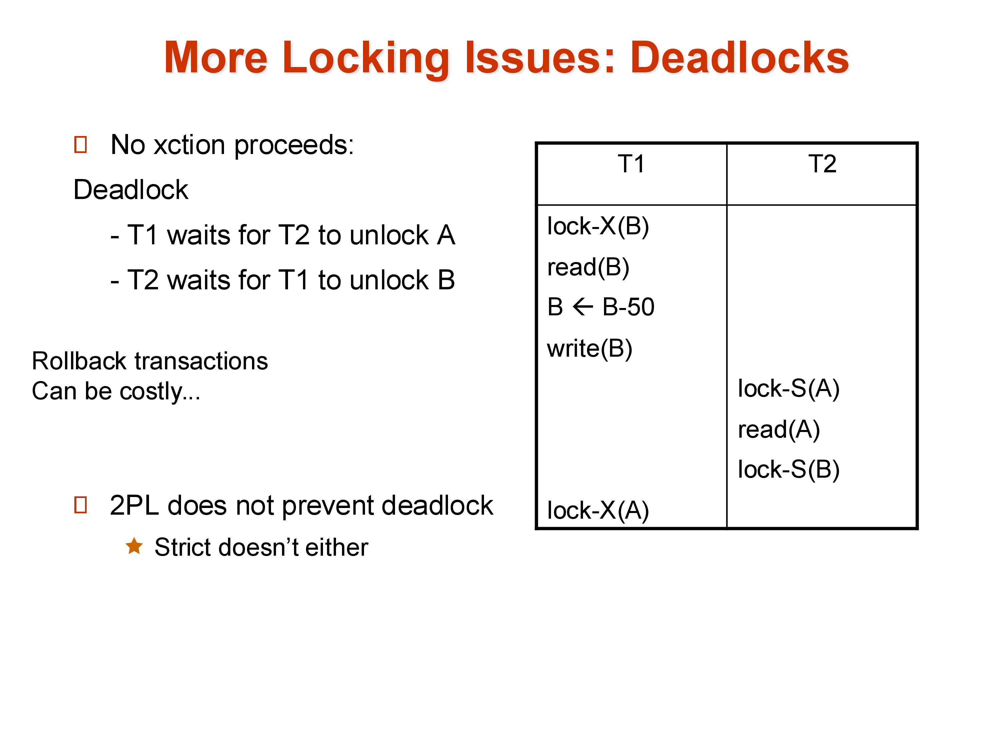
A simple example: T1 holds an X-lock on B and requests a lock on A. T2 holds an X-lock on A and requests a lock on B. T1 waits for T2 to release A; T2 waits for T1 to release B. Both are stuck indefinitely. 2PL does not prevent this — both transactions are following the protocol correctly.
7.1 Deadlock Detection
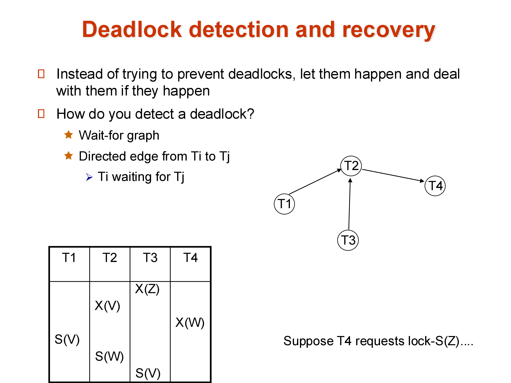
The detection approach: maintain a wait-for graph in which nodes are transactions and a directed edge \(T_i \to T_j\) means \(T_i\) is waiting for \(T_j\) to release a lock. A deadlock exists if and only if the wait-for graph contains a cycle.
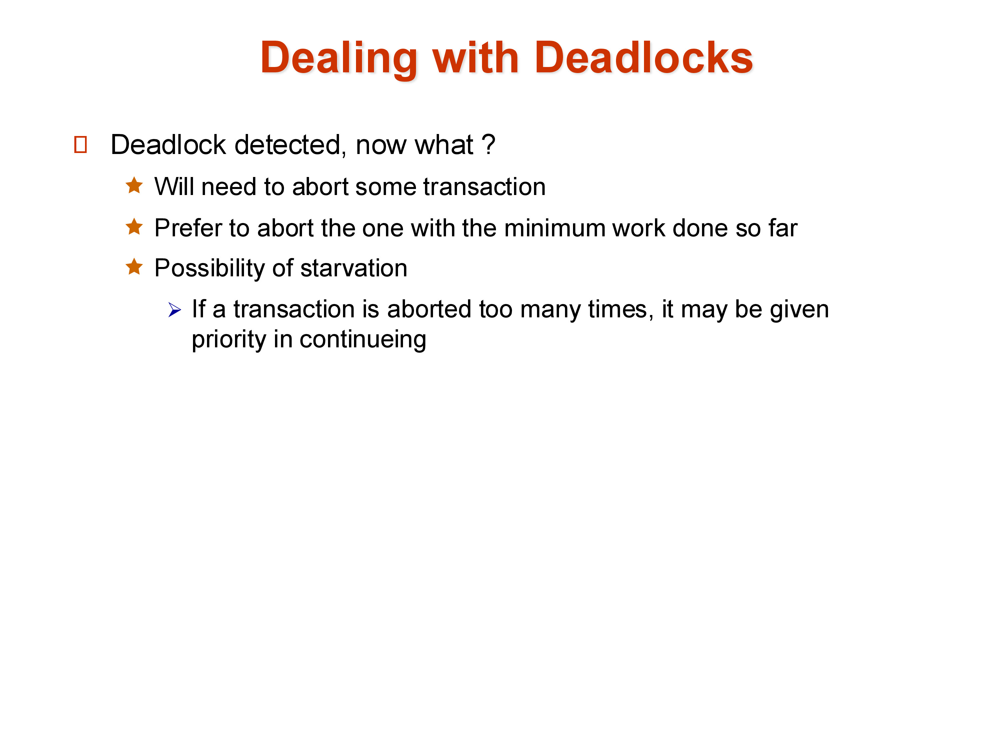
When a cycle is detected, the lock manager must abort one transaction in the cycle to break it. The aborted transaction releases all its locks, allowing the others to proceed. The aborted transaction is then restarted. To choose which transaction to abort, systems prefer the one with the least work done so far — minimizing wasted effort. Care must be taken to avoid starvation: a transaction that is repeatedly chosen as the victim and never gets to complete. Systems track how many times a transaction has been aborted and deprioritize it as a victim once it has suffered enough.
Deadlock detection by cycle-finding works, but has overhead: the wait-for graph must be maintained and scanned periodically. This was an acceptable approach in early systems but is considered too expensive in modern, high-throughput databases.
7.2 Deadlock Prevention
Modern systems prefer to prevent deadlocks from occurring rather than detecting and recovering from them.
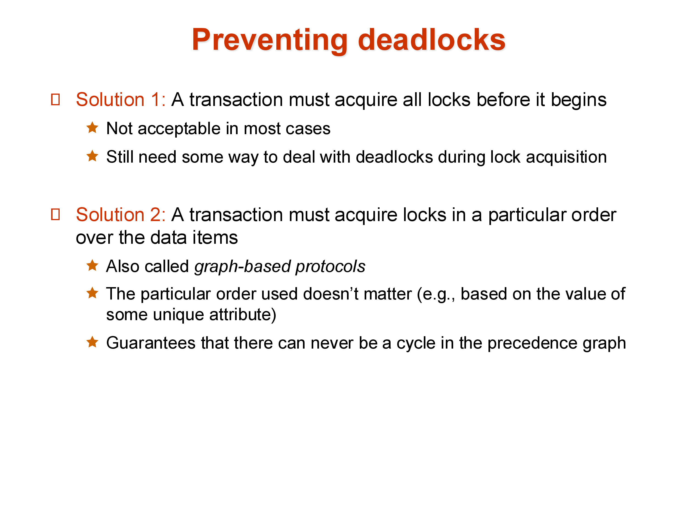
Solution 1 — Pre-declare all locks: require a transaction to acquire all the locks it will ever need before beginning execution. No deadlock is possible because a transaction never waits for a lock after it starts. This is largely impractical: transactions often do not know which items they will access until they execute, and the pre-declaration step itself can deadlock.
Solution 2 — Lock ordering: assign a global total order to all data items and require every transaction to request locks in that order — never requesting a lock on an item with a lower order number than a lock it already holds. If all transactions follow this discipline, cycles in the wait-for graph cannot form: a cycle would require some transaction \(T_i\) to be waiting for \(T_j\) (meaning \(T_i\) wants something \(T_j\) holds, so \(T_j\) is “ahead” in the order) and also \(T_j\) waiting for \(T_i\) (meaning \(T_i\) is “ahead”), which is a contradiction. Lock ordering guarantees deadlock freedom without any coordination between transactions.
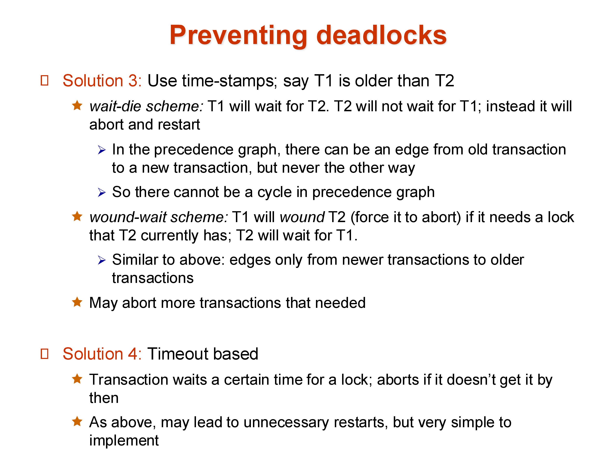
Solution 3 — Timestamp-based schemes: assign each transaction a timestamp when it enters the system. Older timestamps precede newer ones. Two schemes:
- Wait-die: if an older transaction wants a lock held by a newer transaction, it waits. If a newer transaction wants a lock held by an older transaction, the newer transaction aborts (it “dies”) and restarts with its original timestamp. Edges in the wait-for graph can only go from newer to older, so no cycle is possible.
- Wound-wait: if an older transaction wants a lock held by a newer transaction, the older transaction preempts — it “wounds” the newer transaction, forcing it to abort. If a newer transaction wants a lock held by an older one, the newer transaction waits. Again, the wait-for graph is acyclic.
Both schemes are proactive: they abort transactions that may not actually be in a deadlock, wasting their work so far. The tradeoff is simplicity and a guaranteed deadlock-free schedule.
Solution 4 — Timeout: if a transaction has been waiting for a lock for longer than a configured threshold (e.g., 50ms), it aborts and restarts. This is the simplest scheme to implement — no wait-for graph, no timestamps, no coordination. The downside is that it provides no hard guarantee against deadlocks (two transactions could both time out and restart into the same deadlock), and it can cause unnecessary aborts when a transaction is simply waiting on a legitimate but slow transaction rather than a deadlock. Despite these limitations, timeout-based deadlock handling is common in practice because of its simplicity.
8. Multi-Granularity Locking
The discussion so far has treated “data items” as an abstract concept. In practice, a database has objects at many levels: individual attribute values, tuples, pages, relations (tables), and the entire database. The question of what level to lock has significant performance implications.
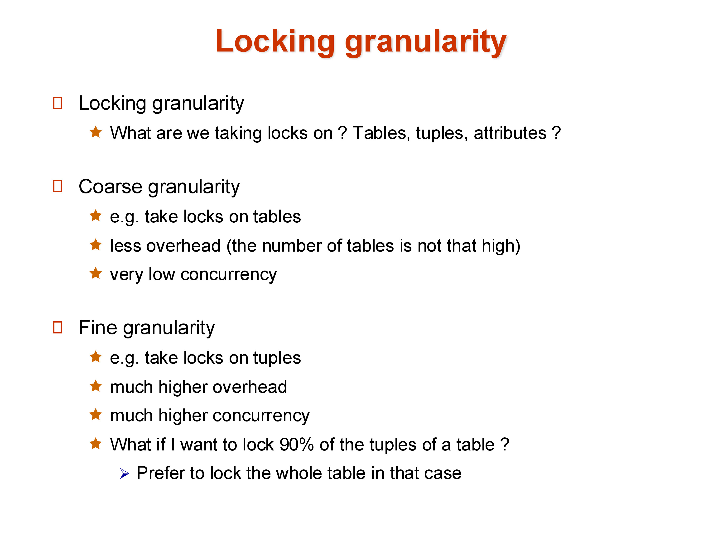
Coarse-grained locking (locking entire tables) has low overhead — one lock per table — but severely limits concurrency. If a transaction locks the takes relation to update one enrollment record, no other transaction can touch any record in takes at all. MongoDB, famously, used collection-level locks for most of its early history, and this was a significant bottleneck.
Fine-grained locking (locking individual tuples) provides excellent concurrency — two transactions updating different students can proceed simultaneously — but has high overhead. A transaction that updates every instructor’s salary would need to acquire and release one lock per tuple. For a relation with millions of rows, this is prohibitive.
What is needed is a system that lets transactions lock at whichever level is appropriate: a tuple-level update takes a tuple lock; a full-table scan and update takes a table lock. The challenge is that the lock manager needs to detect conflicts between locks taken at different levels.
8.1 The Granularity Hierarchy
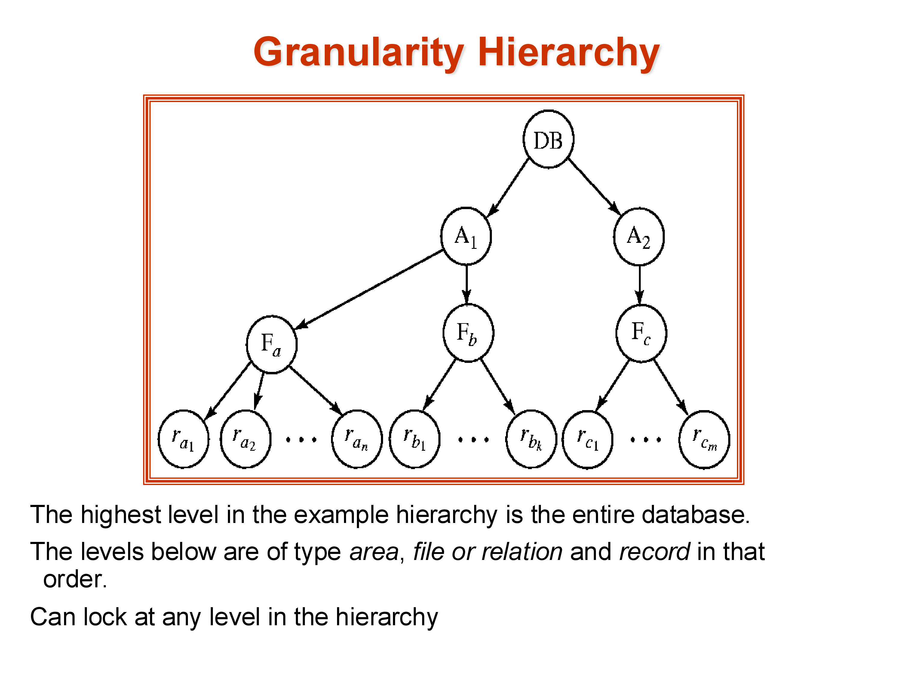
Data objects are organized into a hierarchy: the database at the root, containing areas (logical groupings), containing relations (tables), containing tuples. A lock on any node in the hierarchy implicitly covers all descendants — a table-level lock covers every tuple in that table.
The problem: if transaction T1 holds an X-lock on the entire database and transaction T2 tries to lock a single tuple, the lock table has no entry for that specific tuple. The lock manager cannot detect the conflict without scanning the entire hierarchy, which is too expensive.
8.2 Intention Locks
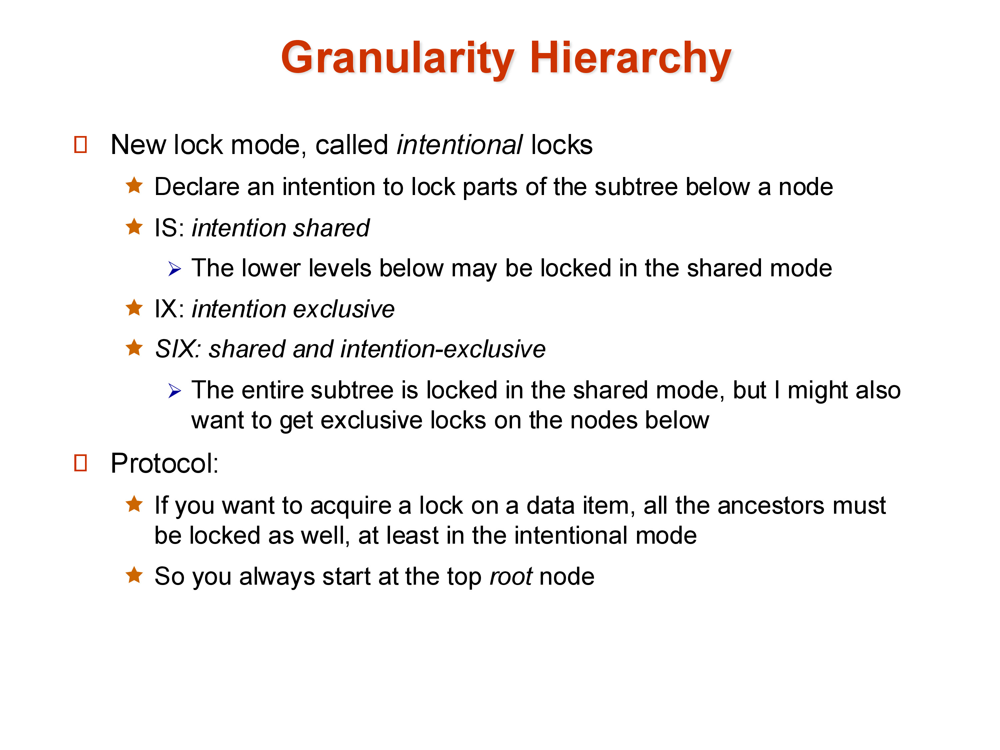
The solution is intention locks. When a transaction wants to lock a node at any level, it must first acquire intention locks on all ancestors, starting from the root and working down. Three new lock modes:
- IS (intention shared): the transaction intends to acquire S-locks on some descendant(s).
- IX (intention exclusive): the transaction intends to acquire X-locks on some descendant(s).
- SIX (shared + intention exclusive): the transaction holds a shared lock on this node (reads all descendants) and also intends to acquire X-locks on some specific descendants.
The protocol: before locking node \(N\), acquire an IS or IX lock on every ancestor of \(N\) (from root to parent of \(N\)), then acquire the desired lock on \(N\) itself.
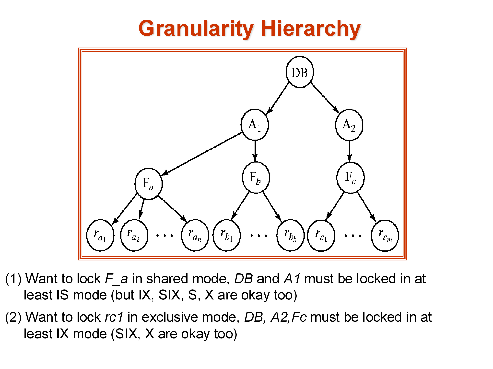
Example: to acquire an S-lock on relation \(F_a\), first acquire IS on the database, IS on the area containing \(F_a\), then S on \(F_a\) itself. To acquire an X-lock on tuple \(r_{c1}\), first acquire IX on the database, IX on the area, IX on the relation \(F_c\), then X on \(r_{c1}\).
This solves the detection problem: when T2 wants to lock a tuple, it must first traverse the hierarchy and acquire IX locks on each ancestor. At the database level, it sees T1’s X-lock, detects the conflict, and waits. The conflict is detected at the coarsest level where it exists — exactly where we want it.
8.3 Compatibility Matrix
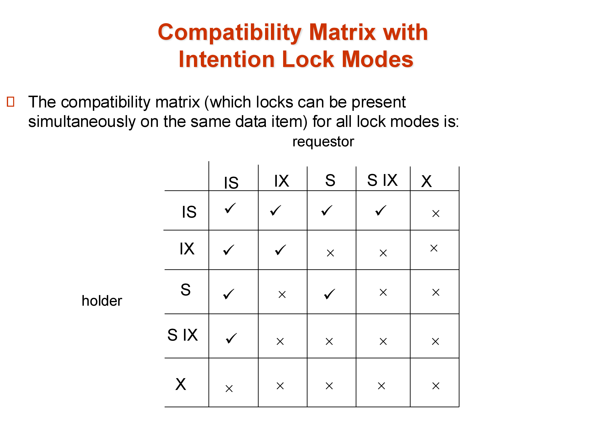
The five lock modes have the following compatibility rules when two transactions request the same node:
| IS | IX | S | SIX | X | |
|---|---|---|---|---|---|
| IS | ✓ | ✓ | ✓ | ✓ | ✗ |
| IX | ✓ | ✓ | ✗ | ✗ | ✗ |
| S | ✓ | ✗ | ✓ | ✗ | ✗ |
| SIX | ✓ | ✗ | ✗ | ✗ | ✗ |
| X | ✗ | ✗ | ✗ | ✗ | ✗ |
The intuition: two IS locks are compatible because both are just signaling intent — the actual conflicts, if any, will be detected at the lower levels where the real S or X locks are acquired. IX and S are incompatible because a shared lock on a node means the holder is reading all descendants; an IX lock on the same node means some other transaction will be writing some descendant — a direct conflict. SIX and IX are incompatible for similar reasons.
8.4 Practical Example
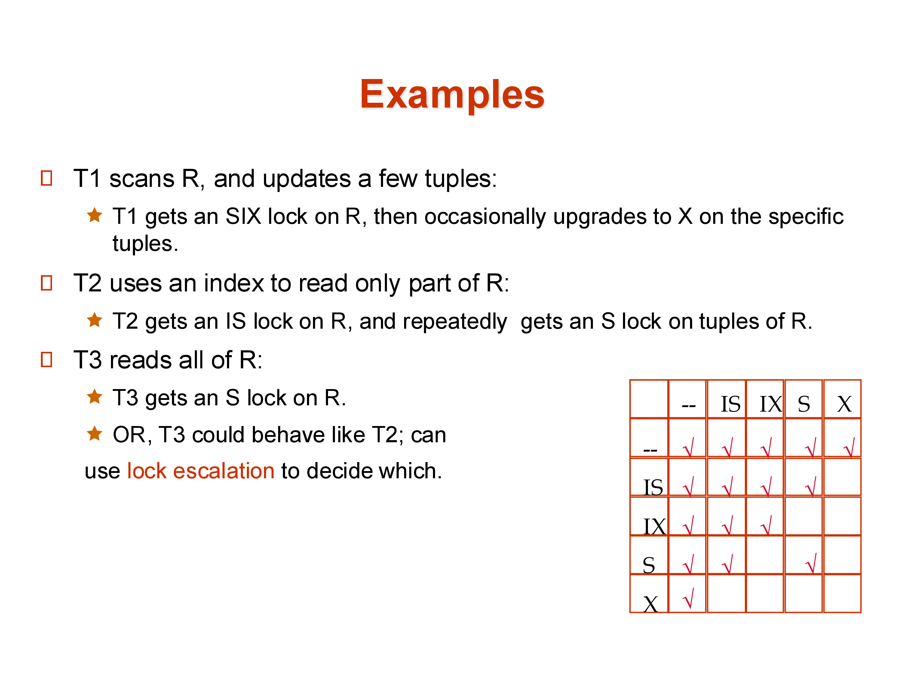
Three common patterns and the appropriate lock modes:
T1 scans the entire relation and updates a few tuples (e.g., give raises to instructors earning less than $80,000): T1 acquires a SIX lock on the relation — this signals that T1 is reading everything (the S component) and will write some specific tuples (the IX component). For each tuple it updates, T1 acquires an X-lock on that individual tuple.
T2 uses an index to read a subset of tuples (e.g., find all music instructors): T2 acquires an IS lock on the relation and then individual S-locks on each tuple it reads.
T3 reads the entire relation (e.g., compute average salary): T3 can acquire a single S lock on the entire relation, covering all tuples without per-tuple overhead.
9. Summary
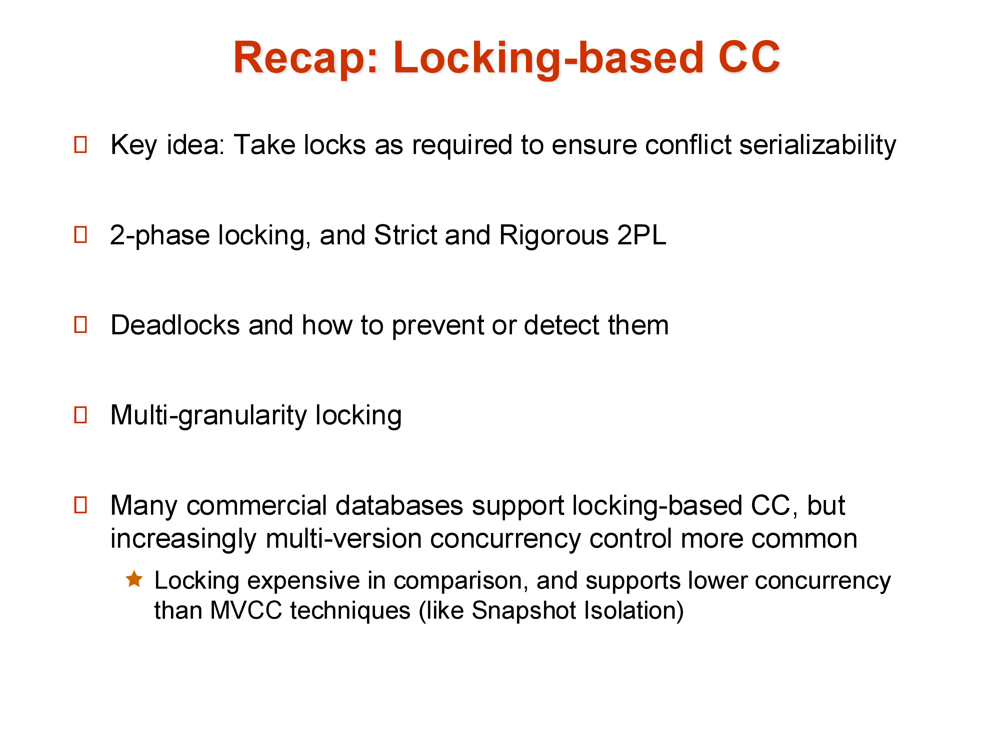
Lock-based concurrency control was the dominant technique in database systems for three decades and remains in use today:
- S/X locks differentiate reads from writes; shared locks are mutually compatible, exclusive locks are not.
- 2PL (growing phase then shrinking phase) guarantees serializability — the equivalent serial order is the lock-point order of transactions.
- Strict 2PL holds exclusive locks until commit or abort, additionally guaranteeing recoverability and preventing cascading aborts.
- Deadlock detection uses a wait-for graph; cycles indicate deadlock, resolved by aborting and restarting one transaction. Deadlock prevention strategies (lock ordering, timestamp-based schemes, timeouts) eliminate deadlocks proactively at the cost of some wasted work.
- Multi-granularity locking with intention locks (IS, IX, SIX) allows transactions to lock at whichever level is appropriate — table-level for bulk updates, tuple-level for targeted updates — while still correctly detecting conflicts across levels.
Despite its elegance and strong correctness guarantees, locking has a significant drawback: readers block writers and writers block readers. This limits concurrency on read-heavy analytical workloads, which are common in modern systems. The dominant concurrency control technique in production databases today is multiversion concurrency control (MVCC), which avoids read-write conflicts by giving each reader a consistent snapshot of the database without locking. That is the subject of the next set of notes.